종자기사 (2015-08-16 기출문제)
1과목: 종자생산학
1. 종자의 테트라졸리움(tetrazolium)검사에서 종자에 나타나는 붉은색 물질은 무엇인가?
- bromide
- carmine
- formazan
- methylbromide
(정답률: 75%)

2. 다음 중 제(臍)가 종자의 끝에 있는 것은?
- 콩
- 시금치
- 상추
- 쑥갓
(정답률: 58%)
3. 다음 채소 중 자연 상태에서 자가 수정 능률이 가장 높은 것은?
- 완두
- 양파
- 시금치
- 호프
(정답률: 62%)
4. 다음 작물 중 배(胚)가 낫 모양을 하고 있는 종자는?
- 토마토
- 명아주
- 쇠비름
- 시금치
(정답률: 59%)
5. 종자 수확 후 저장을 위한 조치로서 가장 유의해아 할 사항은?
- 종자의 건조
- 종자의 소독
- 종자의 정선
- 종자의 포장
(정답률: 87%)
6. 다음 중 실리카겔(silica gel)의 작용은?
- 영양제
- 종자분석
- 수분흡수
- 발아억제
(정답률: 78%)
7. 식물의 자가수정이 이루어지는 원인에 해당하는 것은?
- 폐화수정
- 웅성불임
- 자가불화합
- 자웅이주
(정답률: 87%)
8. 종자의 지하발아에 관한 내용 중 옳은 것은?
- 대부분의 화본과 식물은 지하발아 종자이다.
- 콩은 지하발아 종자이다
- 보통 유근보다 유아가 먼저 나온다.
- 하배축이 급속도로 신장한다.
(정답률: 60%)
9. 특정한 양친의 일정 수만을 심어 그들 간에 교배만 일어나도록 하는 것은?
- 합성종
- 혼성종
- 복합종
- 혼합종
(정답률: 68%)
10. 타식성 작물 채종 시 격리재배를 강조하는 가장 큰 이유는?
- 양분경합에 의한 생리적 퇴화 방지
- 자연교잡에 의한 유전적 퇴화 방지
- 돌연변이에 의한 유전적 퇴화 방지
- 근교약세에 따른 생리적 퇴화 방지
(정답률: 87%)
11. 식물의 수정에 관한 설명으로 틀린 것은?
- 수정은 자성배우자와 웅성배우자가 완전히 성숙했을 경우에 가능하다.
- 피자식물은 중복수정을 한다.
- 나자식물에서 배유의 염색체수는 2n이다.
- 피자식물에서는 3n인 배유세포가 만들어진다.
(정답률: 77%)
12. 다음 중 ( )에 알맞은 것은?
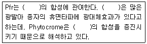
- 지베렐린
- 옥신
- ABA
- 에틸렌
(정답률: 78%)
13. F1 종자를 생산하기 위하여 주로 자가불화합성을 이용하는 작물은?
- 옥수수
- 배추
- 토마토
- 보리
(정답률: 78%)
14. 다음 중 교배에 앞서 제웅이 필요 없는 작물은?
- 수수
- 호박
- 토마토
- 가지
(정답률: 73%)
15. 다음 중 종자의 형상이 방패형인 종자는?
- 아주까리
- 양파
- 콩
- 밀
(정답률: 81%)
16. 웅성불임성에 대한 설명으로 틀린 것은?
- 화분이 형성되지 않는다.
- 수정능력이 없기 때문에 종자를 만들지 못한다.
- 온도, 일장 등에 의하여 임성을 회복할 수 있다.
- 웅성불임에 관여하는 유전자가 핵과 세포질 모두에 있어야 작용한다.
(정답률: 65%)
17. 다음 중 종자의 생리적 휴면에 해당하는 것은?
- 배휴면
- 종피휴면
- 타발휴면
- 후숙
(정답률: 78%)
18. .다음 중 ( )에 알맞은 내용은?
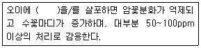
- NAA
- ABA
- GA
- B-9
(정답률: 69%)
19. 발아 중인 종자에서 단백질은 가수분해하여 어떠한 가용성 물질로 변화하는가?
- 지방산
- 맥아당
- 아미노산
- 만노스
(정답률: 87%)
20. 토양에 어떤 성분이 부족할 때 콩과작물들이 떡잎의 내부 표면에 갈색의 괴사조직이 있는 괴저증 종자를 생산하는가?
- 망간
- 붕소
- 마그네슘
- 질소
(정답률: 44%)
2과목: 식물육종학
21. 재배식물과 그 기원지의 연결이 옳지 않은 것은?
- 벼-인도, 중국
- 콩-중앙아메리카,멕시코
- 고구마-멕시코, 중앙아메리카
- 수수-중앙아프리카, 에티오피아
(정답률: 59%)
22. 자식 또는 근친교배로 인한 근교(자식)약세가 더 이상 진행되지 않는 수준을 무엇이라 하는가?
- 우성설
- 초우성설
- 잡종강세
- 자식극한
(정답률: 84%)
23. 피자식물의 극핵, 조세포, 반족세포, 난세포 수의 총 합은?
- 7
- 8
- 9
- 10
(정답률: 78%)
24. 다음 중 ( )에 알맞은 것은?
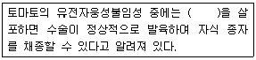
- 에틸렌
- 사이토카이닌
- 옥신
- 지베렐린
(정답률: 56%)
25. 동형접합이거나 반수접합일 때에만 표현형으로 나타나는 것은?
- 우성 돌연변이
- 열성돌연변이
- 인위 돌연변이
- 가시 돌연변이
(정답률: 59%)
26. BC3F1이 뜻하는 것은?
- BC1F1을 다시 반복친에 여교배한 F2
- BC1F1을 다시 반복친에 여교배한 F3
- BC2F1을 다시 반복친에 여교배한 F2
- BC2F1을 다시 반복친에 여교배한 F1
(정답률: 71%)
27. 다음 중 ( )에 알맞은 내용은?
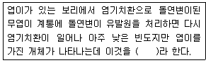
- 점돌연변이
- 복귀돌연변이
- 트랜스포존
- 염색체돌연변이
(정답률: 67%)
28. 타식성 식물집단의 유전변이가 자식성 식물집단보다 큰 이유는?
- 화분친이 제한되어 있지 않다.
- 화분친의 선택교배가 이루어진다.
- 순계가 빨리 이른다.
- 돌연변이체가 많다.
(정답률: 67%)
29. 다음 중 ( )에 알맞은 내용은?
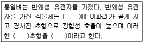
- 작은 키, 단간직립, 다수성 초형
- 작은 키, 장간직립, 다수성 초형
- 큰 키, 단간직립, 다수성 초형
- 큰 키, 장간직립, 다수성 초형
(정답률: 72%)
30. 다음 중 ( ) 에 알맞은 내용을 왼쪽부터 순서대로 가장 옳게 쓴 것은?
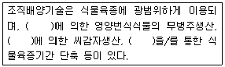
- 약배양, 조직배양, 생장점배양
- 생장점배양, 조직배양, 약배양
- 생장점배양, 약배양, 조직배양
- 약배양, 생장점배양, 조직배양
(정답률: 71%)
31. 개화기를 앞당기기 위하여 단일처리를 할 때 효과가 가장 작은 식물은??
- 나팔꽃
- 코스모스
- 양귀비
- 담배
(정답률: 53%)
32. 두 쌍의 대립유전자가 중복유전자일 때 32. 분리비는?
- 15:1
- 9:6:1
- 9:7
- 3:13
(정답률: 66%)
33. 다음 중 잡종후대에 대한 설명이 옳은 것은?
- F1식물은 이형접합체이므로 대립유전자의 우열관계를 알 수 있다.
- F1식물에서 채종한 종자는 F1종자이며, F1종자를 심으면 F2식물을 얻을 수 있다.
- F1종자들이 발아하여 생육한 F2식물은 유전자형에 따라 특성이 비슷하므로 F2집단에서는 여러가지 유전자형이 분리한다.
- F3식물로부터 채종한 종자는 F3세대이며, F3한 개체에서 채종한 F3종자들이 발아하여 생육한 개체군을 F4계통이라 한다.
(정답률: 50%)
34. 다른 종류의 게놈을 복수로 가지고 있는 이질배수체는?
- 반수체
- 복2배체
- 동질3배체
- 동질4배체
(정답률: 85%)
35. 다음 중 ( )에 알맞은 것은?
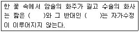
- 장주화, 장주화
- 장주화, 단주화
- 단주화, 단주화
- 중주화, 중주화
(정답률: 85%)
36. 씨 없는 수박의 육종과정이 바른 것은?
- 3배체 작성→3배체 선발 →3배체(♀)×2배체(♂)
- 3배체 작성→3배체 선발 →3배체(♀)×3배체(♂)
- 4배체 작성→4배체 선발 →4배체(♀)×2배체(♂)
- 4배체 작성→4배체 선발 →4배체(♀)×4배체(♂)
(정답률: 70%)
37. 과채류와 과실류의 후숙성에 큰 영향을 미치는 특성은?
- 외관특성
- 소비특성
- 가공특성
- 유통특성
(정답률: 68%)
38. 지구상에서 유전자 자원이 침식(손실)되는 가장 보편적인 원인은?
- 돌연변이로 인한 진화에 의하여 유전자원이 침식한다.
- 우량 품종이 육성, 보급됨에 따라 유전적으로 다양한 재래종 집단이 손실된다.
- 유전자원의 탐색에 의하여 유전자원을 수집, 보존하기 때문이다.
- 유전자원이 육종에 이용되기 때문이다.
(정답률: 81%)
39. 종자로 번식시키면 원래의 특성과 다른 식물체를 얻게 될 수 있기 때문에 종자보존으로 적당하지 않은 작물로만 짝지은 것은?
- 딸기, 감자
- 고구마, 귀리
- 벼, 고추
- 밀, 보리
(정답률: 78%)
40. 다음 중 기존의 우수한 계통에 웅성불임성이나 병저항성 등 단일유전자에 의해 지배되는 형질을 도입하려 할 때 효과적인 육종방법은?
- 여교배 육종법
- 순환선발 육종법
- 순계분리 육종법
- 배수성 육종법
(정답률: 81%)
3과목: 재배원론
41. 토양 수분 중 작물이 흡수할 수 없는 수분은?
- 결합수
- 모관수
- 중력수
- 지하수
(정답률: 67%)
42. 다음 중 변온에 대한 설명으로 옳은 것은?
- 가을에 결실하는 작물은 대체로 변온에 의해서 결실이 억제된다.
- 동화물질의 축적은 어느 정도 변온이 큰 조건에서 많이 이루어진다.
- 모든 종자는 변온조건에서 발아가 촉진된다.
- 일반적으로 작물의 생장에는 변온이 큰 것이 유리하다.
(정답률: 69%)
43. 광합성에서 산소발생을 수반하는 광화학반응에 촉매작용을 하는 무기원소는?
- 코발트
- 마그네슘
- 염소
- 규소
(정답률: 49%)
44. 우리나라 작물재배 특색을 가장 잘 나타낸 것은?
- 고소득 작물의 도입 등 작부체계가 발달하였다.
- 최근 질소질 비료의 감축 등으로 친환경 농업이 크게 발달하였다.
- 쌀의 비중이 커서 미곡(米穀)농업이라 할 수 있다.
- 치산치수가 잘 되어 기상재해가 적은 편이다.
(정답률: 72%)
45. 비료 및 시비에 대한 설명으로 맞는 것은?
- 요소 비료는 생리적 산성비료이다.
- 용성인비의 인산성분은 17~21%이다.
- 질산태 질소는 시비시 토양에 잘 흡착된다.
- 뿌리를 수확하는 작물은 칼륨보다 질소질 비료의 효과가 크다.
(정답률: 52%)
46. 종자의 발아와 휴면에 대하여 올바르게 기술한 것은?
- 벼는 종자무게의 5%의 수분을 흡수하여야 발아한다.
- 환경이 불리하여 발아하지 않는 것을 자발적 휴면이라 한다.
- 수발아가 잘 되는 품종은 휴면성이 약하다.
- 수중에서 발아가 감퇴하지 않는 종자는 귀리, 밀, 콩 등이다.
(정답률: 44%)
47. 다음 중 하고현상을 일으키지 않는 목초는?
- 알팔파
- 브롬그라스
- 수단그라스
- 스위트클로버
(정답률: 54%)
48. 식물 생장조절제 에틸렌(ethylene)의 농업적 이용이 아닌 것은?
- 옥수수, 당근, 양파 등 작물 생육억제 효과가 있다.
- 오이, 호박 등에서 암꽃의 착생수를 증대시킨다.
- 사과, 자두 등의 과수에서 적과의 효과가 있다.
- 양상추, 땅콩 종자의 휴면을 연장하여 발아를 억제한다.
(정답률: 50%)
49. 토양의 양이온치환용량(CEC)에 대한 설명으로 맞는 것은?
- CEC는 토양 교질 입자가 많으면 작아진다.
- CEC는 토양 화학성을 나타내는 의미 면에서 염기치환용량과 전혀 다른 개념이다.
- CEC가 커지면 비효가 오래 지속된다.
- CEC가 커지면 토양의 완충능력이 작아진다.
(정답률: 65%)
50. 세포분열을 촉진하는 물질로서 잎의 생장촉진, 호흡억제, 엽록소와 단백질의 분해억제, 노화방지 및 저장 중의 신선도 증진 등의 효과가 있는 물질은?
- ABA
- auxin
- cytokinin
- NAA
(정답률: 66%)
51. 식물체의 붕소 결핍 증상이 아닌 것은?
- 분열조직이 괴사한다.
- 식물의 키가 커져서 도복하기 쉽다.
- 사탕무의 속썩음병이 발생한다.
- 알팔파의 황색병이 발생한다.
(정답률: 73%)
52. 우리나라 밭 토양의 양이온치환용량은 10.5이고 K+은 0.4, Ca+2은 3.5, Mg+2은 1.4me/100이었다. 우리나라 밭 토양의 평균 염기포화도는?
- 5.7%
- 15.8%
- 50.5%
- 53.0%
(정답률: 51%)
53. 밀 게놈 조성 중 ABD에 속하는 것으로만 이루어진 것은?
- Triticum vulgare, Triticum compactum
- Triticum durum, Triticum monococcum
- Triticum turgidum, Triticum polonicum
- Triticum aegilopoides, Triticum vulgare
(정답률: 47%)
54. 식물체 내의 수분포텐셜을 올바르게 설명한 것은?
- 삼투포텐셜, 압력포텐셜, 매트릭포텐셜, 토양수분보유력으로 구성된다.
- 매트릭포텐셜과 압력포텐셜이 같으면 팽만상태가 된다.
- 수분포텐셜과 삼투포텐셜이 같으면 팽만상태가 된다.
- 삼투포텐셜과 압력포텐셜이 같으면 팽만상태가 된다.
(정답률: 52%)
55. 재배종과 야생종의 특징을 바르게 설명한 것은?
- 야생종은 휴면성이 약하다.
- 재배종은 대립종자로 발전하였다.
- 재배종은 단백질 함량이 높아지고 탄수화물 함량이 낮아지는 방향으로 발달하였다.
- 성숙시 종자의 탈립성은 재배종이 크다.
(정답률: 58%)
56. 개화유도물질(A)과 발아억제물질(B)이 각각 올바르게 연결된 것은?
- A :버날린, B :플로리겐
- A :오옥신, B :지베렐린
- A :플로리겐, B :블라스토콜린
- A :피토크롬, B :블라스탄닌
(정답률: 60%)
57. 종자의 퇴화와 채종에 대한 설명으로 옳은 것은?
- 감자는 남부의 평야지에서 우량 종서를 생산할 수 있다.
- 콩은 서늘한 지역에서 생산한 종자가 양호하다.
- 옥수수의 격리재배는 100m 정도로 한다.
- 배추, 무의 격리재배는 1,000cm 이상이다.
(정답률: 49%)
58. 다음 중 토양 반응의 미산성에 해당하는 pH범위는?
- 4.9~5.2
- 5.3~5.8
- 6.1~6.5
- 6.8~7.5
(정답률: 47%)
59. 다음 중 식물학상 종자에 해당되는 것은?
- 벼
- 옥수수
- 호프
- 오이
(정답률: 43%)
60. 환경에 의한 변이는 유전하지 않으나 원인불명이지만 유전하는 변이도 있는데 이것을 돌연변이라 한다. 이 학설을 주장한 사람은?
- De Vries
- Mendel
- Johannsen
- Darwin
(정답률: 69%)
4과목: 식물보호학
61. 광합성 저해에 의하여 살초 작용하는 제초제가 아닌 것은?
- urea
- uracil
- triazine
- chlorsulfuron
(정답률: 47%)
62. 다음은 어떤 해충에 대한 설명인가?
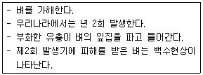
- 벼멸구
- 혹명나방
- 이화명나방
- 벼물바구미
(정답률: 64%)
63. Erwinia속 무름병의 가장 대표적인 병징은?
- 기형
- 악취
- 점무늬
- 시들음
(정답률: 78%)
64. 토양전염성 식물병으로 옳은 것은?
- 벼 오갈병
- 사과 탄저병
- 인삼 모잘록병
- 맥류 겉깜부기병
(정답률: 56%)
65. 잡초를 방제하기 위해 제초제나 생물을 사용하지 않는 물리적 방제법으로 옳지 않은 것은?
- 소각
- 윤작
- 솔라리제이션
- 극초단파 이용
(정답률: 63%)
66. 곤충의 신경 중 전대뇌에 연결되어 있는 것은?
- 전위
- 시신경
- 더듬이
- 윗입술 신경
(정답률: 64%)
67. 다음 설명에 해당하는 것은?
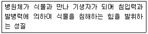
- 회복
- 감염
- 감수체
- 병원성
(정답률: 70%)
68. 다음 중 항생제 계통이 아닌 것은?
- 가스가마이신 액제
- 포스티아제이드 액제
- 스트렙토마이신 수화제
- 옥시테트라사이클린 수화제
(정답률: 44%)
69. 파필라(papilla) 돌기물이 나타나 병원균 침입에 저항하는 형태는?
- 화학적 방어반응
- 형태적 방어반응
- 물리적 방어반응
- 유전적 방어반응
(정답률: 69%)
70. 배나무 붉은병무늬병균에 관한 설명으로 옳은 것은?
- 자낭균에 속한다.
- 여름포자세대가 없다.
- 중간기주는 소나무이다.
- 병원균은 Cronartium ribicola이다.
(정답률: 45%)
71. 다음 중 완전변태류가 아닌 것은?
- 벌목
- 나비목
- 메뚜기목
- 딱정벌레목
(정답률: 74%)
72. 농약관리법에 정의된 잔류성에 의한 농약의 구분으로 옳지 않은 것은?
- 종자전염성농약
- 작물잔류성농약
- 토양잔류성농약
- 수질오염성농약
(정답률: 74%)
73. 작물에 대한 잡초의 피해 요인이 아닌 것은?
- 작물에 기생하여 직접적으로 영양분을 탈취한다.
- 작물이 필요한 영양분과 생육환경에 경쟁한다.
- 작물에 발생하는 병해충의 중간기주로 작용한다.
- 작물이 생육하는 데 중요한 토양습도를 상승시킨다.
(정답률: 78%)
74. 농약의 형태 중 입제의 입자 크기는 대체로 어느 정도인가?
- 8~60 메시(mesh)
- 80~130 메시(mesh)
- 100~180 메시(mesh)
- 250 메시(mesh) 이상
(정답률: 57%)
75. 창고에 보관중인 100kg의 콩에 살충제를 10ppm 농도로 처리하려고 할 때 살충제의 소요약량은? (단, 살충제는 50% 유제이며, 비중은 1이다.)
- 0.02mL
- 0.2mL
- 2mL
- 20mL
(정답률: 38%)
76. 여름철 밭작물에 발생하는 1년생 화본과 잡초가 아닌 것은?
- 개기장
- 바랭이
- 강아지풀
- 나도겨풀
(정답률: 54%)
77. 곤충의 유충과 번데기 시기 사이에 의용의 시기가 존재하는 것으로 딱정벌레목의 가뢰과에서 볼 수 있는 것은?
- 과변태
- 반변태
- 점변태
- 증절변태
(정답률: 56%)
78. 각종 피해 원인에 대한 작물의 피해를 직접피해, 간접피해 및 후속피해로 분류할 때 간접적인 피해에 해당하는 것은?
- 수확물의 질적 저하
- 수확물의 양적 감소
- 수확물 분류, 건조 및 가공비용 증가
- 2차적 병원체에 대한 식물의 감수성 증가
(정답률: 72%)
79. 세포벽에 섬유소를 함유하는 균류는?
- 난균류
- 병꼴균류
- 자낭균류
- 담자균류
(정답률: 44%)
80. 뿌리혹선충 유무를 알기 위한 지표식물로 적절하지 못한 것은?
- 콩
- 담배
- 감자
- 토마토
(정답률: 50%)
5과목: 종자관련법규
81. 다음 설명의 ( )에 알맞은 것은?
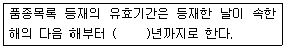
- 5
- 10
- 15
- 20
(정답률: 75%)
82. 다음 중 품종보호료 면제사유에 해당하지 않는 것은?
- 국가가 품종보호권의 설정등록을 받기 위하여 품종보호료를 납부하여야 하는 경우
- 지방자치단체가 품종보호권의 설정등록을 받기 위하여 품종보호료를 납부하여야 하는 경우
- 국가가 품종보호권의 존속기간이 끝난 후 품종보호료를 납부하여야 하는 경우
- 국민기초생활보장법에 따른 수급권자가 품종보호권의 설정등록을 받기 위하여 품종보호료를 납부 하여야 하는 경우
(정답률: 61%)
83. 종자의 자체보증 대상인 것은?
- 국제종자검정협회(ISTA)가 보증한 종자
- 종자업자가 품종목록 등재대상 작물의 종자를 생산한 종자
- 국제종자검정가협회(AOSA)가 보증한 종자
- 농림축산식품부장관이 정하는 외국의 종자검정기관이 보증한 종자
(정답률: 66%)
84. 수입종자에 대하여 수입적응성시험을 받지 아니하고 종자를 수입한 자에 대한 벌칙 기준은?
- 500만원 이하의 벌금
- 1500만원 이하의 벌금
- 1년 이하의 징역 또는 1,000만원 이하의 벌금
- 2년 이하의 징역 또는 2,000만원 이하의 벌금
(정답률: 77%)
85. 다음 중 정립이 아닌 것은?
- 발아립
- 소립
- 이물
- 목초나 화곡류의 영화가 배유를 가진 것
(정답률: 75%)
86. 직무육성품종과 관련된 설명으로 옳은 것은?
- 농민이 육성하거나 발견하여 개발한 품종으로서 미래 농업의 직무에 속한 것
- 농민이 육성하거나 발견하여 개발한 품종으로서 품종보호권이 주어진 품종일 것
- 공무원이 육성하거나 발견하여 개발한 품종으로서 미래농업의 직무에 속한 것
- 공무원이 육성하거나 발견하여 개발한 품종으로서 그 성질상 국가 또는 지방자치단체의 업무범위에 속한 것
(정답률: 72%)
87. 보증의 유효기간이 틀린 것은?
- 채소 : 2년
- 버섯 : 1개월
- 감자 : 2개월
- 콩 : 1년
(정답률: 68%)
88. 다음 중 상추종자를 생산하기 위하여 종자업을 등록하고자 할 때 철재하우스가 갖추어야 할 종자업의 시설기준으로 맞는 것은?
- 100m2 이상
- 1,000m2 이상
- 330m2 이상
- 3,330m2 이상
(정답률: 63%)
89. 품종보호등록을 위해 품종이 갖추어야 할 요건에 해당하는 것은?
- 구별성, 균일성, 안정성
- 구별성, 우수성, 균일성
- 안정성, 우량성, 균일성
- 우수성, 우량성, 안정성
(정답률: 84%)
90. 다음 중 유통종자의 품질표시사항으로 맞는 것은?
- 종자의 포장당 무게 또는 낱알 개수
- 농림축산식푸부장관이 정하는 병충해의 유뮤
- 자체순도 검정확인 표시
- 수입종자인 경우에는 수입적응성시험 확인대장 등재번호
(정답률: 51%)
91. 벼의 포장검사 규격에 따른 검사대상 항목이 아닌 것은?
- 품종순도
- 이종 종자수
- 찰벼 출현율
- 병주의 특정성
(정답률: 66%)
92. 다음 중 포장검사 신청서에 기재할 사항은?
- 포장신청 면적
- 포장관리인의 성명 및 주소
- 육성자의 성명 및 주소
- 위탁생산자의 성명 및 주소
(정답률: 58%)
93. 국내에 처음으로 수입되는 품종의 종자를 판매하기 위해 수입하고자 하는 자가 신청하는 수입적응성시험을 실시하는 기관으로 맞는 것은?
- 농업기술센터
- 한국종자협회
- 국립종자원
- 국립농산물품질관리원
(정답률: 40%)
94. “품종”의 정의로 가장 잘 설명한 것은?
- 식물학에서 통용되는 최저분류 단위의 식물군으로서 유전적으로 발현되는 특성 중 한 가지 이상의 특성이 다른 식물군과 구별되고 변함없이 증식될 수 있는 것
- 식물학에서 통용되는 하위 단위의 식물군으로 유전적으로 발현되는 특성 중 두 가지 이상의 특성이 다른 식물군과 구별되고 변함없이 증식될 수 있는 것
- 식물학에서 통용되는 최저분류 단위의 식물군으로 유전적으로 발현되는 특성 중 두 가지 이상의 특성이 다른 식물군과 구별되고 변함없이 증식될 수 있는 것
- 식물학에서 통용되는 상위 단위의 식물군으로 유전적으로 발현되는 특성 중 한 가지 이상의 특성이 다른 식물군과 구별되고 변함없이 증식될 수 있는 것
(정답률: 67%)
95. 다음 중 ( )에 알맞은 내용은?
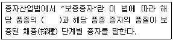
- 구별성
- 안정성
- 진위성
- 우수성
(정답률: 57%)
96. 다음 중 국가품종목록 등재서류의 보존기간은?
- 당해 품종의 품종목록 등재 유효기간 동안 보존
- 당해 품종의 품종목록 등재 유효기간이 경과 후 1년간 보존
- 당해 품종의 품종목록 등재 유효기간이 경과 후 3년간 보존
- 당해 품종의 품종목록 등재 유효기간이 등재한 날부터 5년간 보존
(정답률: 58%)
97. 다음 중 국가품종목록에 등재하여 품종의 생산보급이 가능한 작물은?
- 밀
- 콩
- 호밀
- 고구마
(정답률: 64%)
98. 종자산업법의 제정 목적으로 맞지 않는 것은?
- 종자산업의 발전 도모
- 농업생산의 안정
- 종자산업의 육성 및 지원
- 종자산업 관련 법규의 규제 강화
(정답률: 72%)
99. 품종보호와 관련하여 심판을 청구하고자 할 경우 심판청구서에 작성할 내용으로 맞지 않는 것은?
- 심판청구자의 성명과 주소, 품종의 명칭을 기재하여야 한다.
- 심판청구서에는 청구의 취지 및 이유가 기재되어야 한다.
- 품종보호 출원일자 및 품종보호 출원번호는 기재하지 않아도 된다.
- 심사관이 품종보호를 결정한 일자를 기재한다.
(정답률: 83%)
100. 다음 중 품종보호에 관한 설명으로 옳지 않은 것은?
- 동일 품종에 대하여 다른 날에 둘 이상의 품종보호 출원이 있을 때에는 가장 먼저 출원한 자만이 그 품종에 대하여 품종보호를 받을 수 있다.
- 품종보호를 받을 수 있는 권리가 공유인 경우에는 공유자 전원이 공동으로 품종보호 출원을 하여야한다.
- 출원공개가 있는 때에는 누구든지 해당 품종이 품종보호를 받을 수 없다는 취지의 정보를 증거와 함께 농림축산식품부장관에게 제공할 수 있다.
- 우선권을 주장하고자 하는 자는 최초의 품종보호 출원일 다음 날부터 2년 이내에 품종보호 출원을 하여야 한다.
(정답률: 48%)